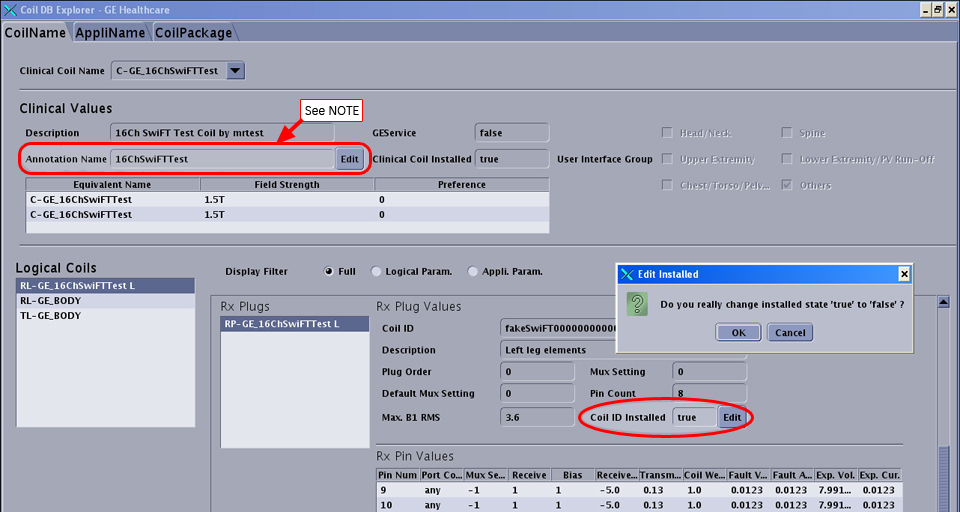
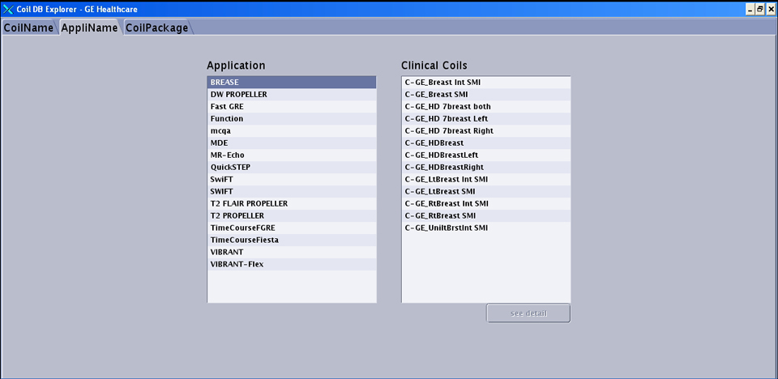
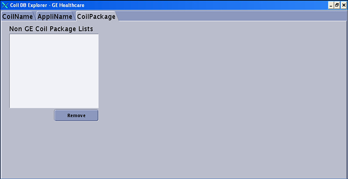

Operating Documentation
Direction 5500113, Rev# 3
Discovery MR450 1.5T Service Methods
Module Version 2.0, Version Date 6/16/10
Operating Documentation |
| Required Persons | Preliminary Reqs | Procedure | Finalization |
|---|---|---|---|
| 1 | Not Applicable | 5 minutes | Not Applicable |
Coils can be removed from the User Interface via the Coil Database Explorer tool (they are NOT deleted from the database).
The Coil Database Explorer consists of three tabs: CoilName, AppliName, and CoilPackage. This document describes the use of this tool and what information is stored in these tabs.
Click the Configuration tab on the Common Service Desktop, then Coil Database Explorer under the configuration folder on the left. Select Click here to start this tool to launch the Coil Database Explorer. See the following illustration.
Illustration 1: Common Service Desktop – Configuration Screen

The CoilName tab provides all of the information on the coils that are loaded onto the system. The following illustration shows an example. Note that one coil may have multiple Clinical Coil Names or Coil IDs.
Illustration 2: Coil Database Explorer – CoilName Tab

The user can show or hide what coils the customer views as available on the User Interface by setting the Coil ID Installed as “False.” Click [edit] and select [OK] from the pop-up to remove the coil name from the Scan Interface List. See the example below.
Illustration 3: Coil Database Explorer – Remove Coil Name from Scan Interface

|
The AppliName tab shows what Clinical Coil Names work with what Applications Package. An example is shown below.
Illustration 4: Coil Database Explorer – AppliName Tab

The CoilPackage tab shows any non-GE Supported Coil Packages that would be loaded onto the system by the customer. They could be removed via this page. Removing non-GE supported coils via this tool removes the config files from the system. Reinstalling the coil would require following the installation instructions provided with the coil. An example is shown below.
Illustration 5: Coil Database Explorer – CoilPackage Tab

Close all windows to exit the tool.